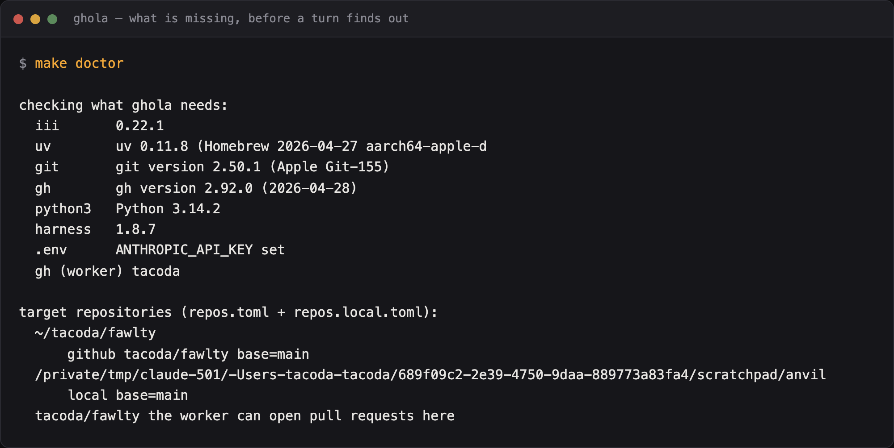

Quickstart
Three steps. The shortest honest path runs all three against a repository nobody else can see. Read what ghola does not do before you start.
git clone tacoda_github:tacoda/ghola.git
git clone tacoda_github:tacoda/ladder.git
git clone tacoda_github:tacoda/audit-log.git
cd ladder && make install && cd ../audit-log && make install && cd ../ghola
make setup
Clone all three, side by side. ladder carries the rules and
audit-log keeps the record. Both run as host processes from their
own checkouts, because one has to see your repository and the other has to
outlive the sandbox. make up starts them if they are there.
ghola will carry its own copies of the ladder and the audit log. Then a clone gives you the whole thing, instead of three repositories to keep in step. Those copies are a shipping convenience, not the end state. Each one becomes a worker in its own right again later, because the rung is useful without the rest of ghola.
If a sibling is missing, make up says so and keeps going.
That is deliberate for the ladder and dangerous for the record: without
audit-log nothing is written down, and make up
prints NOTHING WILL BE RECORDED. Point AUDITLOG or
LADDER at another directory if you keep them somewhere
else.
make setup checks your tools, builds the venv, writes
.env from the example, and creates an empty
repos.local.toml. Then it tells you what is left to do.
Step one: a key and a repository
Put your ANTHROPIC_API_KEY in .env. The provider
workers read credentials from the engine's own environment. Start the engine
without the key and the router serves no models, so every turn fails at
router::provider::resolve and nothing says why. The first time I
hit this, the engine had the key in its shell and not in its environment. The
router's fallback limit then capped a million-token model at 8192 tokens.
Name a repository in repos.local.toml. Git ignores that file,
and it beats repos.toml, the tracked template that holds the
examples.
Start with a scratch repository and no forge:
[repos."/Users/you/code/scratch"] forge = "local" base = "main"
That needs no GitHub account, no token, and no slug. ghola writes the
request for review into .ghola/requests/ in the repository itself.
Merge the branch to land it.
make up make doctor # what is missing, before you spend a turn finding out make repos # every target repository, and what is wrong with it

make doctor names the version of every tool it found, the
harness pin, and each target repository. Fix what it reports before you submit
anything.
Step two: one job
make submit SPEC=specs/document-the-ports.md REPO=/Users/you/code/scratch make jobs
Watch it in the console at http://127.0.0.1:3133. The job
plans, runs, proves, reviews, commits through your repository's own hook, and
opens the request. Then it stops. Nothing merges itself.
sequenceDiagram
autonumber
actor You
participant G as ghola
participant H as harness
participant R as your repo
participant AL as audit-log
You->>G: make submit SPEC=... REPO=...
G->>R: cut a worktree
G->>H: plan, then run
H->>R: write the diff
G->>H: prove, then review
G->>R: commit, through your own hook
R-->>G: the hook refused
G->>H: revise, up to max_revisions
G->>R: open the request for review
G->>AL: every refusal, every verdict
G--)You: it stops here
You->>R: merge, close, or comment
R-->>G: a comment, so rework the branch

Each phase is one session in the trace panel, named for the job and the phase. Open a row to see every tool call the phase made, and how long each one took.
Write a comment in the request file and ghola reworks the branch. Merge the branch and ghola lands the job, then releases the worktree.
Step three: make it yours
Now change something. In the order to reach for them:
- A prompt.
prompts/plan.mdis what the planning turn gets asked. Editing it moves more than anything else here, and nothing checks it, so read evals first. - The pipeline. Copy
examples/minimal/settings/pipeline.yamlintosettings/for one turn per job. Copyexamples/strict/for every check plus a security read. - The oversight dial.
settings/oversight.yamlruns frommanualtodark, and ships atsupervised. - A rule. Write it in the target repository's
CLAUDE.md. Then read the ladder and pick the rung that can see what it is about.
The customization contract lists everything that has a home, and how to override each one.
Moving to a real repository
Add a GitHub entry to repos.local.toml:
[repos."/Users/you/code/real-repo"] slug = "you/real-repo" base = "main"
Then check the thing that fails latest and hurts most:
make doctor
The identity that pushes and the identity that opens a pull request are not
the same thing. Your shell may push over an SSH alias while the
github worker uses whatever GH_TOKEN the engine
started with. That mismatch surfaces at pr create, after a job has
already paid for a worktree, a plan, a run and two checks. So
make doctor asks the worker which account it is. Asking your shell
would answer a different question.
Put the token in .env as GH_TOKEN. Git tracks
config/github.yaml, so that file holds a reference and never a
secret.
What to expect in the first week
Most of what goes wrong is a thing your repository wanted and never said. A convention that lives in somebody's head is a convention a turn cannot read. Each one costs you a revision until somebody writes it down. Writing it down is the work.
The improve lane needs a record. make improve
reads the audit log and the job records, then proposes what would have
prevented whatever cost you something. On a fresh clone it finds nothing and
says so. Come back to it after a few weeks.
Budget for the commit hook. A strict hook produces
revisions rather than failures. Check that max_revisions in
repos.toml is high enough to let the loop finish.
When to stop
If your process already works and your team already follows it, ghola will not make it faster. What it does is make an unattended process auditable, and that is worth paying for only once some part of your process runs unattended.